These are some photos of the most beloved teachers and students of the 2nd TDS!
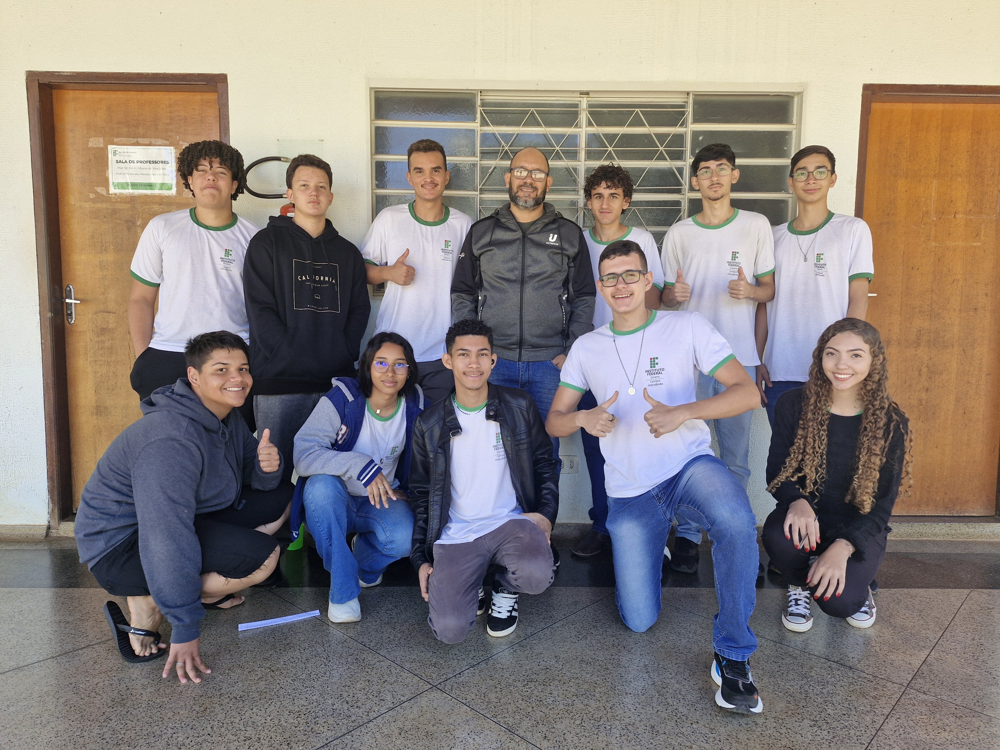
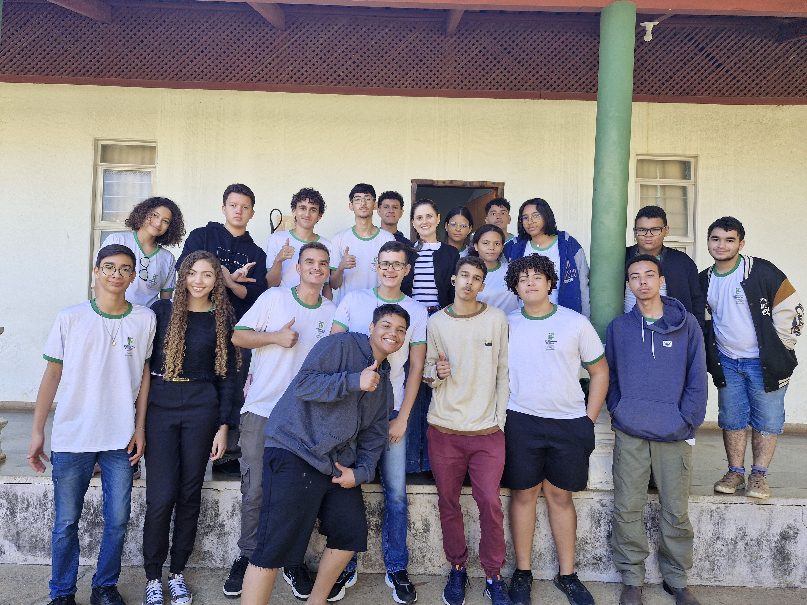
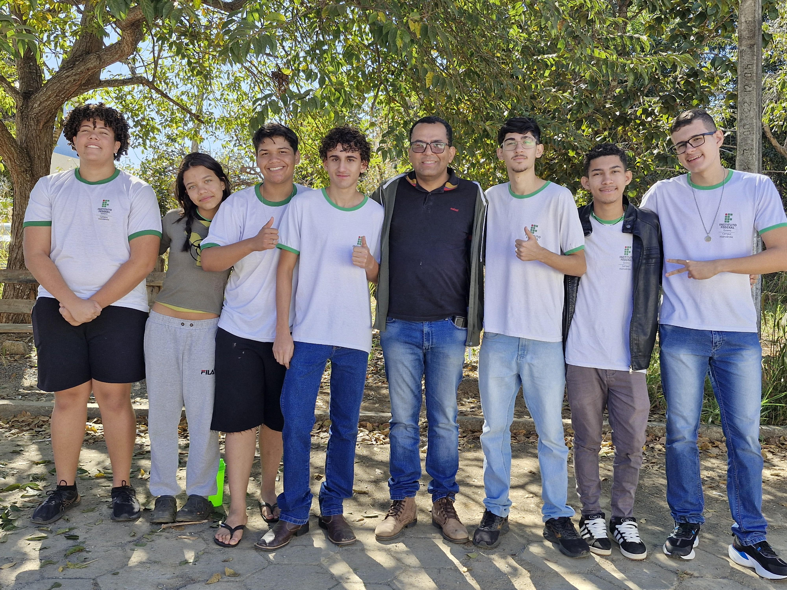
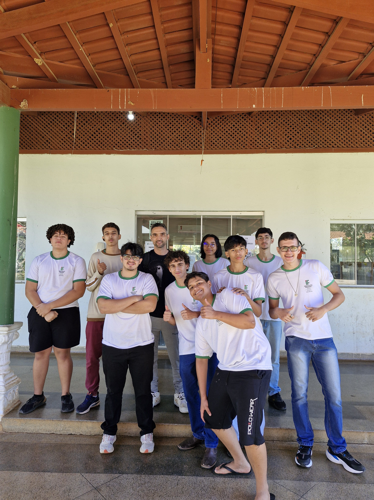
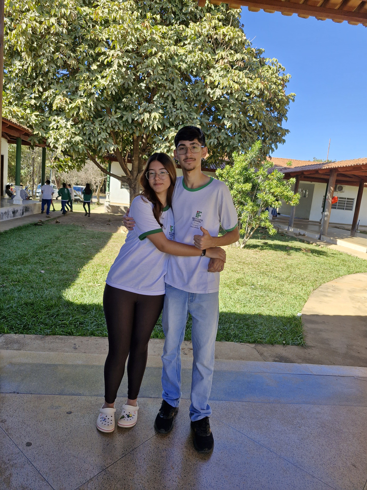
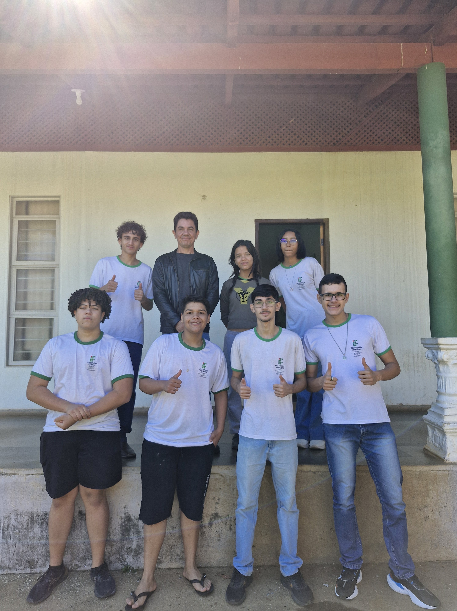
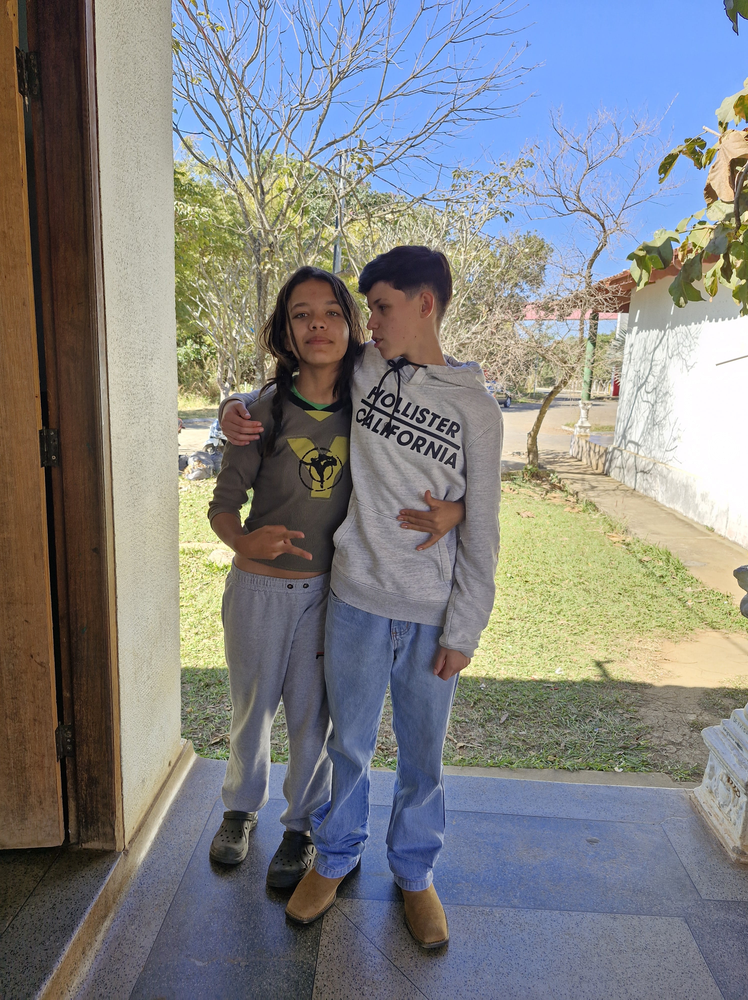
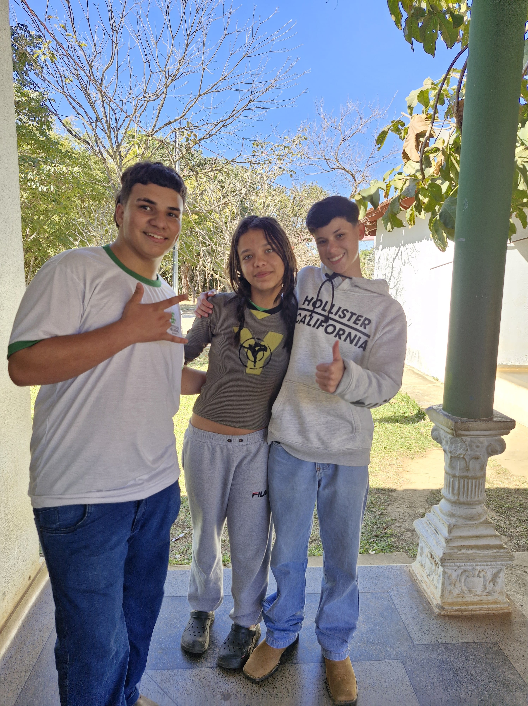
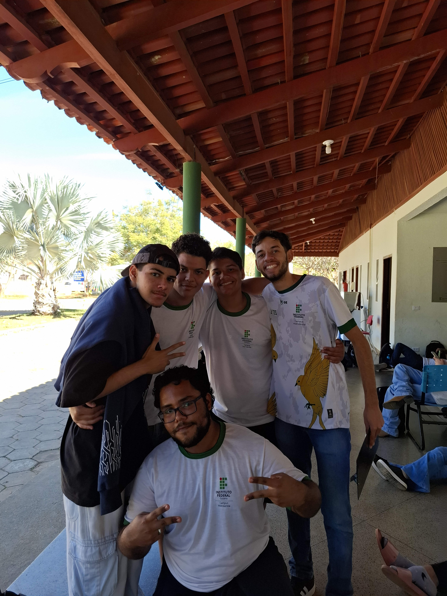
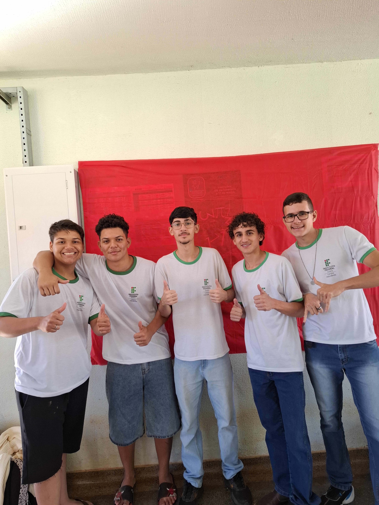
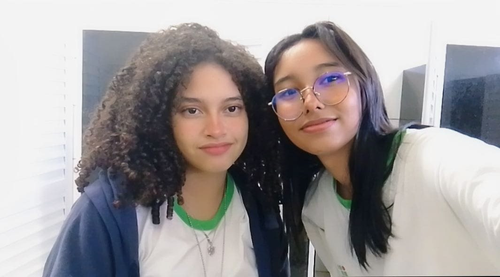
SITE FEITO POR:
Cauã Gustavo de Freitas Cruvinel
Davi Freitas de Jesus
FOTOS CAPTURADAS POR:
Vitor Hugo Nogueira Freire Cupertino